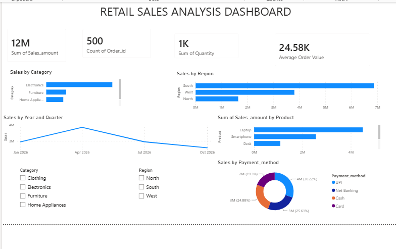
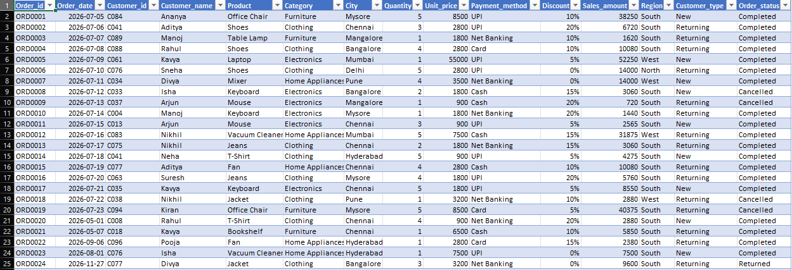

DATA ANALYTICS PROJECT
An end-to-end retail sales analysis project using Excel, SQL, Python and Power BI to discover valuable business insights.
Data cleaning, organization and basic analysis of retail sales data.
Used SQL queries for filtering, aggregation, grouping and analyzing sales data.
Used Python and Pandas for data cleaning, exploration and generating insights.
This project analyzes retail sales data to understand sales performance, product trends, customer behavior and regional performance.
The main objective is to transform raw retail sales data into meaningful insights that can support better business decisions.
Excel | SQL | Python | Power BI | HTML | CSS
Data cleaning and analysis
Database querying and analysis
Data analysis using Pandas
Interactive data visualization
Webpage structure
Webpage styling
I created an interactive Power BI dashboard to analyze retail sales performance and identify important business insights.

I cleaned, organized and analyzed the retail sales dataset using Microsoft Excel.

Created a 500-row retail sales dataset and performed the following operations. The image above shows a sample of the data.